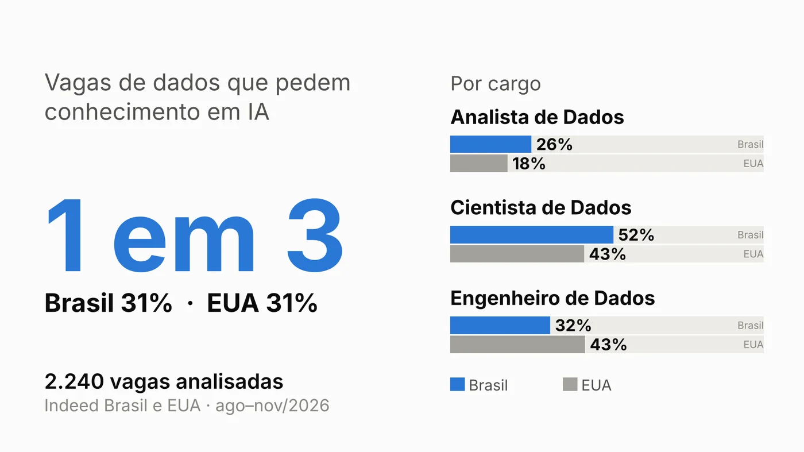
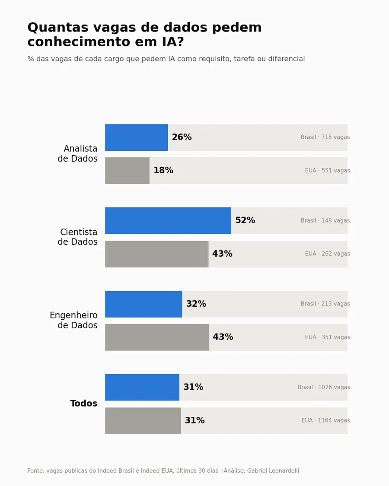
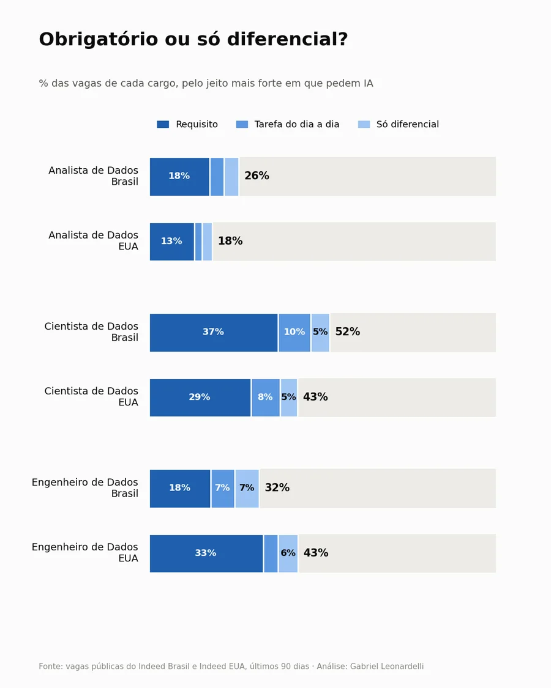
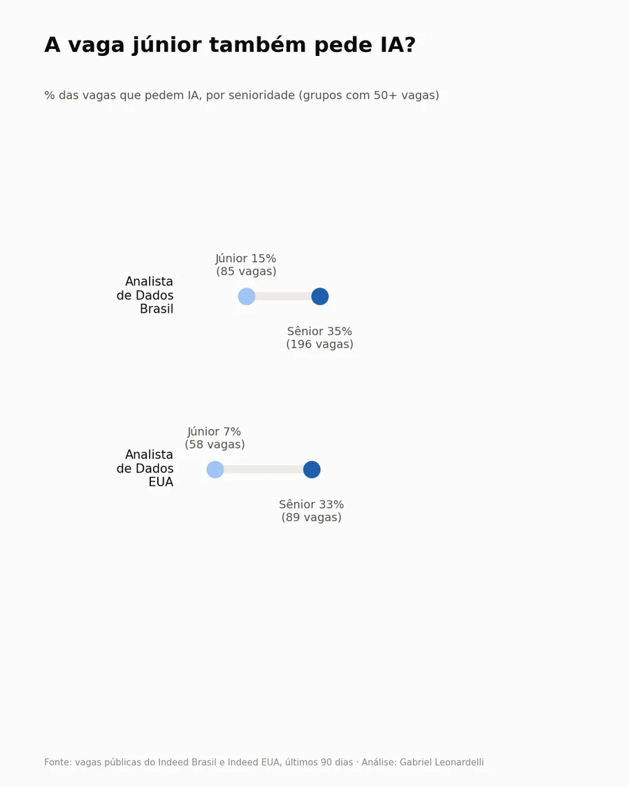
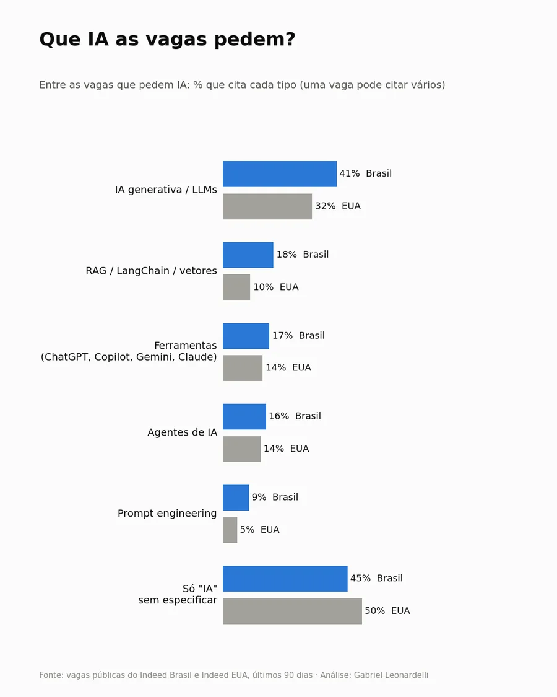

Explore os dados
Escolha o país e o cargo. Todos os números e gráficos abaixo se atualizam. A linha fina sobre cada barra mostra a margem de erro (intervalo de confiança de 95%).
Vagas que pedem IA, por cargo
% das vagas de cada cargo
Requisito, tarefa ou só diferencial?
% das vagas, pelo jeito mais forte em que pedem IA
Júnior, pleno e sênior
Que IA as vagas pedem?
Entre as vagas que pedem IA · uma vaga pode citar vários tipos
Modelo de trabalho
% das vagas que pedem IA, por modelo de trabalho · todos os cargos
Grupos com menos de 30 vagas ficam esmaecidos: a margem de erro é grande demais para tirar conclusão.
Fonte: 2.240 vagas públicas do Indeed Brasil e EUA, ago–nov/2026. Dados e código no GitHub.
O que eu descobri
1 · Por cargo
Cientista lidera, mas o Analista já é cobrado
No Brasil, a IA aparece em 52% das vagas de Cientista, 32% das de Engenheiro e 26% das de Analista de Dados.
A surpresa está no Analista: no Brasil, ele é mais cobrado por IA (26%) do que nos EUA (18%). A diferença se mantém mesmo considerando a margem de erro (de 23% a 29% no Brasil e de 15% a 22% nos EUA).

2 · Requisito ou diferencial
Quando pedem, é para valer
No Brasil, só 5% das vagas trazem IA apenas como diferencial. Na maioria das vezes ela aparece como requisito (20% das vagas) ou como tarefa do dia a dia (6%), quando a vaga espera que você use IA no trabalho.

3 · Senioridade
A exigência cresce com o nível, mas o júnior já sente
Entre as vagas de Analista de Dados no Brasil, 15% das júnior pedem IA, contra 35% das sênior. Nos EUA, a diferença é maior: 7% contra 33%.
Comparei só grupos com pelo menos 50 vagas. Por isso, Cientista e Engenheiro ficaram de fora, porque há poucas vagas júnior desses cargos.

4 · Que IA
IA generativa é o pedido mais comum
Entre as vagas que pedem IA no Brasil, 41% citam IA generativa ou LLMs. Depois vêm RAG/LangChain (18%), ferramentas como ChatGPT e Copilot (17%) e agentes de IA (16%).
Cerca de metade das vagas fala só em "IA", sem dizer qual. E as vagas remotas pedem mais IA: 37% no Brasil e 39% nos EUA.

Como eu fiz
- ColetaBuscas no Indeed Brasil e no Indeed EUA com os mesmos cargos, somadas às coletas dos meus dois projetos anteriores. De 28 mil vagas coletadas, cheguei a 2.240 únicas dos três cargos, publicadas nos últimos 90 dias.
- Leitura da vaga por seçõesMuitas empresas citam IA só na própria apresentação ("somos uma empresa focada em IA"), o que não é um pedido ao candidato. Por isso, a descrição é lida por seções: IA em requisitos conta como requisito, em diferenciais como diferencial, em responsabilidades como tarefa do dia a dia, e na apresentação da empresa ou nos benefícios não conta.
- ValidaçãoLi 70 trechos que o método contou como pedido de IA, 35 de cada país, e cerca de 9 em cada 10 eram pedidos reais. A leitura gerou três ajustes: não contar avisos como "é proibido usar IA na entrevista", frases em que a IA é só o destino dos dados e cursos de formação.
- Análise com margem de erroCada percentual tem intervalo de confiança de 95% (Wilson). Machine Learning foi medido à parte, porque a pergunta é sobre IA no sentido em que o mercado usa a palavra hoje.
| Vagas que pedem IA | Brasil | EUA |
|---|---|---|
| Analista de Dados | 26% | 18% |
| Cientista de Dados | 52% | 43% |
| Engenheiro de Dados | 32% | 43% |
| Todas | 31% | 31% |
Limitações: uma única fonte (Indeed) e só vagas ativas no dia da coleta; a detecção é por palavras, então uma vaga pode pedir IA com termos fora da lista; vagas sem títulos de seção dependem de uma regra de frase, menos precisa; e os mercados do Brasil e dos EUA têm tamanhos muito diferentes.
Próximo projetoOlist: o que atrasa as entregas e quanto isso custa